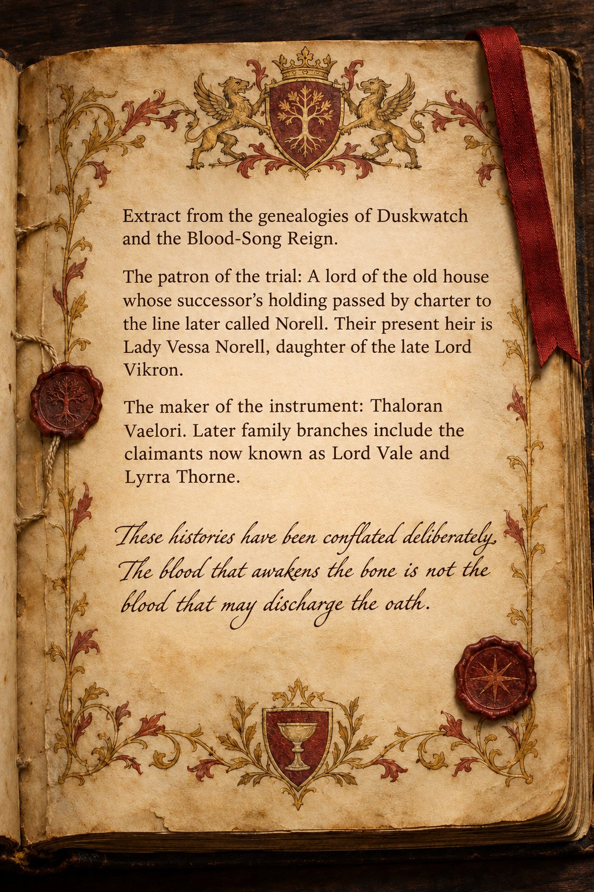

Extract from the genealogies of Duskwatch and the Blood-Song Reign.
The patron of the trial: A lord of the old house whose successor's holding passed by charter to the line later called Norell. Their present heir is Lady Vessa Norell, daughter of the late Lord Vikron.
The maker of the instrument: Thaloran Vaelori. Later family branches include the claimants now known as Lord Vale and Lyrra Thorne.
Notes in a later hand: These histories have been conflated deliberately. The blood that awakens the bone is not the blood that may discharge the oath.